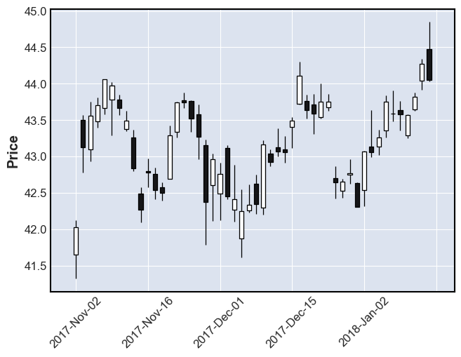
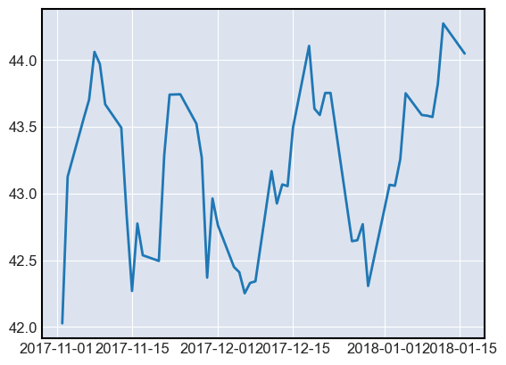
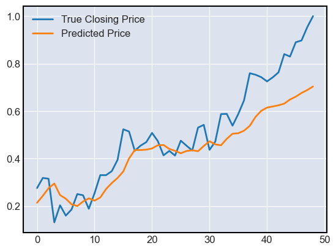

Closing Price Prediction with LSTM
Contents
Closing Price Prediction with LSTM#
In this notebook, we only consider the time series consisting of daily closing prices. The information of daily opening, lowest and highest price is not used.
import numpy as np
import pandas as pd
import os
import torch
from torch import nn
from torch import optim
from torchsummary import summary
from torchviz import make_dot
from sklearn.preprocessing import MinMaxScaler
from sklearn.metrics import mean_squared_error
import matplotlib.pyplot as plt
import mplfinance as mpf
Data Processing#
DATA_DIR = "../../data"
stocks = pd.read_csv(os.path.join(DATA_DIR, "stocks.csv"), index_col=0, parse_dates=True)
stocks.head(5)
| Company | Sector | Open | High | Low | Close | Volume | |
|---|---|---|---|---|---|---|---|
| Date | |||||||
| 2017-11-02 | AAPL | Technology | 41.650002 | 42.125000 | 41.320000 | 42.027500 | 165573600 |
| 2017-11-03 | AAPL | Technology | 43.500000 | 43.564999 | 42.779999 | 43.125000 | 237594400 |
| 2017-11-06 | AAPL | Technology | 43.092499 | 43.747501 | 42.930000 | 43.562500 | 140105200 |
| 2017-11-07 | AAPL | Technology | 43.477501 | 43.812500 | 43.400002 | 43.702499 | 97446000 |
| 2017-11-08 | AAPL | Technology | 43.665001 | 44.060001 | 43.582500 | 44.060001 | 97638000 |
We choose to analyze the Apple company.
apple = stocks[stocks["Company"] == "AAPL"]
apple.head()
| Company | Sector | Open | High | Low | Close | Volume | |
|---|---|---|---|---|---|---|---|
| Date | |||||||
| 2017-11-02 | AAPL | Technology | 41.650002 | 42.125000 | 41.320000 | 42.027500 | 165573600 |
| 2017-11-03 | AAPL | Technology | 43.500000 | 43.564999 | 42.779999 | 43.125000 | 237594400 |
| 2017-11-06 | AAPL | Technology | 43.092499 | 43.747501 | 42.930000 | 43.562500 | 140105200 |
| 2017-11-07 | AAPL | Technology | 43.477501 | 43.812500 | 43.400002 | 43.702499 | 97446000 |
| 2017-11-08 | AAPL | Technology | 43.665001 | 44.060001 | 43.582500 | 44.060001 | 97638000 |
mpf.plot(apple.head(50), type="candle")

plt.plot(apple["Close"].head(50))
plt.show()

begin = 0
num_days = 500
end = begin + num_days
closing_prices = apple.iloc[begin : end]["Close"].to_numpy()
closing_prices
array([42.02750015, 43.125 , 43.5625 , 43.70249939, 44.06000137,
43.97000122, 43.66749954, 43.49250031, 42.83499908, 42.27000046,
42.77500153, 42.53749847, 42.49499893, 43.28499985, 43.74000168,
43.74250031, 43.52249908, 43.26750183, 42.36999893, 42.96250153,
42.76250076, 42.45000076, 42.40999985, 42.25249863, 42.33000183,
42.34249878, 43.16749954, 42.92499924, 43.06750107, 43.05500031,
43.49250031, 44.10499954, 43.63499832, 43.58750153, 43.75249863,
43.75249863, 42.64250183, 42.65000153, 42.77000046, 42.30749893,
43.06499863, 43.05749893, 43.25749969, 43.75 , 43.58750153,
43.58250046, 43.57249832, 43.81999969, 44.27249908, 44.04750061,
44.77500153, 44.81499863, 44.61500168, 44.25 , 44.25999832,
43.55500031, 42.77750015, 42.87749863, 41.99000168, 41.74250031,
41.85749817, 41.94499969, 40.125 , 39.12250137, 40.75749969,
39.88499832, 38.78749847, 39.10250092, 40.67750168, 41.08499908,
41.84249878, 43.24750137, 43.10749817, 42.96250153, 42.76750183,
43.125 , 43.875 , 44.74250031, 44.59749985, 44.52999878,
43.75 , 44.05250168, 44.20500183, 44.16749954, 43.75749969,
44.23500061, 44.99499893, 45.43000031, 44.99250031, 44.61000061,
44.66249847, 44.50500107, 43.82500076, 43.81000137, 42.81750107,
42.21250153, 41.23500061, 43.19250107, 42.08499908, 41.61999893,
41.94499969, 41.66999817, 42.09749985, 42.90250015, 43.20000076,
42.09500122, 42.51250076, 43.3125 , 43.11000061, 43.53499985,
43.68249893, 43.95500183, 44.56000137, 44.45999908, 43.20000076,
41.43000031, 41.31000137, 40.73500061, 40.91249847, 41.05500031,
40.58000183, 41.31499863, 42.27500153, 44.14250183, 44.22249985,
45.95750046, 46.29000092, 46.51250076, 46.84000015, 47.50999832,
47.14749908, 47.03749847, 46.61000061, 47.04499817, 46.74750137,
46.57749939, 46.90750122, 46.79000092, 47.09000015, 47.03749847,
47.14500046, 46.97499847, 46.875 , 46.71749878, 47.56000137,
47.95750046, 48.32749939, 48.49499893, 48.36500168, 47.92499924,
47.80749893, 48.06999969, 47.67499924, 47.70000076, 47.20999908,
47.18500137, 46.42250061, 46.625 , 46.36500168, 46.22999954,
45.54249954, 46.10749817, 46.04000092, 46.375 , 46.27750015,
46.79499817, 45.97999954, 46.34999847, 46.99250031, 47.64500046,
47.58750153, 46.97000122, 47.75749969, 47.83250046, 47.72750092,
47.86249924, 47.59999847, 47.97000122, 47.86000061, 47.90250015,
48.25 , 48.70500183, 48.55250168, 47.74499893, 47.47750092,
47.57249832, 50.375 , 51.84749985, 51.99750137, 52.26750183,
51.77750015, 51.8125 , 52.22000122, 51.88249969, 52.21749878,
52.4375 , 52.56000137, 53.33000183, 54.39500046, 53.86500168,
53.75999832, 53.76250076, 53.87250137, 54.04000092, 54.48500061,
54.92499924, 55.74499893, 56.25749969, 56.90750122, 57.09000015,
56.71749878, 55.77500153, 55.32500076, 54.58250046, 55.96250153,
55.26750183, 56.60250092, 55.95999908, 54.47000122, 54.56000137,
54.59249878, 55.00749969, 54.41500092, 55.19749832, 55.54750061,
55.10499954, 56.23749924, 56.43500137, 56.81499863, 57.31999969,
58.01750183, 56.99750137, 56.07249832, 55.94250107, 56.71749878,
54.09000015, 53.61249924, 55.52750015, 54.34000015, 55.53749847,
55.29750061, 54.00500107, 54.82749939, 55.16249847, 55.68249893,
53.77249908, 54.95000076, 54.07500076, 53.06000137, 53.32500076,
54.71500015, 55.55500031, 51.86999893, 50.39749908, 50.94250107,
52.48749924, 52.12250137, 51.11750031, 48.54249954, 48.05749893,
46.70000076, 47.85250092, 48.38249969, 46.46500015, 44.24499893,
44.19499969, 43.07249832, 43.65499878, 43.56000137, 45.23500061,
44.88750076, 44.64500046, 46.20500183, 44.17250061, 43.68000031,
42.12250137, 42.40000153, 42.15750122, 42.27500153, 42.73749924,
41.36999893, 40.98500061, 41.51750183, 40.22249985, 39.20750046,
37.68249893, 36.70750046, 39.29249954, 39.03749847, 39.05749893,
39.43500137, 39.47999954, 35.54750061, 37.06499863, 36.98249817,
37.6875 , 38.32749939, 38.45000076, 38.07249832, 37.5 ,
38.26750183, 38.73500061, 38.96500015, 39.20500183, 38.32500076,
38.47999954, 38.17499924, 39.43999863, 39.07500076, 38.66999817,
41.3125 , 41.61000061, 41.63000107, 42.8125 , 43.54499817,
43.56000137, 42.73500061, 42.60250092, 42.35749817, 42.72249985,
42.54499817, 42.70000076, 42.60499954, 42.73249817, 43.00749969,
42.76499939, 43.24250031, 43.55749893, 43.58250046, 43.71749878,
43.28749847, 43.74250031, 43.96250153, 43.88249969, 43.63000107,
43.125 , 43.22750092, 44.72499847, 45.22750092, 45.42750168,
45.93249893, 46.52999878, 47.00500107, 46.63249969, 47.04000092,
48.77249908, 47.76250076, 47.18500137, 46.69749832, 47.11750031,
47.18000031, 47.48749924, 47.81000137, 48.50500107, 48.83750153,
48.92250061, 49.25 , 50.02500153, 49.875 , 50.15499878,
49.73749924, 49.71749878, 49.80749893, 49.8125 , 50.78250122,
50.96500015, 51.13249969, 51.86999893, 51.79000092, 51.31999969,
51.07500076, 51.15250015, 50.16749954, 52.63000107, 52.28749847,
52.9375 , 52.11999893, 50.71500015, 50.72499847, 50.18000031,
49.29499817, 46.43000031, 47.16500092, 47.72999954, 47.52000046,
47.25 , 45.77249908, 46.65000153, 45.69499969, 44.91500092,
44.74250031, 44.55749893, 44.34500122, 44.57500076, 43.76750183,
43.32500076, 44.90999985, 45.63499832, 46.30500031, 47.53749847,
48.14500046, 48.70249939, 48.54750061, 48.53749847, 48.18500137,
48.47249985, 49.61249924, 49.46749878, 49.86500168, 49.69499969,
49.64500046, 48.89250183, 49.95000076, 49.93500137, 49.47999954,
50.38750076, 50.68249893, 51.10250092, 51.05749893, 50.00500107,
50.31000137, 50.80749893, 50.4375 , 50.82500076, 51.30250168,
51.125 , 50.83750153, 51.41500092, 50.64749908, 51.80500031,
52.20999908, 52.16749954, 51.75500107, 51.93500137, 52.41999817,
52.19499969, 53.25999832, 52.10749817, 51.00500107, 48.33499908,
49.25 , 49.75999832, 50.85749817, 50.24750137, 50.11999893,
52.24250031, 50.6875 , 50.43500137, 51.625 , 52.58750153,
52.59000015, 53.15999985, 53.11500168, 50.65999985, 51.62250137,
51.04000092, 51.38249969, 52.25249863, 52.18500137, 51.42499924,
52.29750061, 53.31999969, 53.31499863, 53.54249954, 54.17499924,
55.89749908, 55.77249908, 54.6875 , 54.97499847, 55.17499924,
55.69250107, 55.24000168, 54.43249893, 54.68000031, 54.41999817,
55.25749969, 54.97249985, 54.70500183, 55.99250031, 56.14749908,
54.74000168, 55.20500183, 56.75249863, 56.76499939, 56.09999847,
56.75749969, 57.52249908, 59.05250168, 58.96749878, 58.83000183,
58.59249878, 58.81999969, 59.10250092, 60.12749863, 59.99000168,
60.79499817, 60.89500046, 61.64500046, 62.26250076, 60.82249832])
def make_batches(seq: np.ndarray, window_size: int) -> np.ndarray:
return np.array([
seq[i : i+window_size]
for i in range(len(seq) - window_size)
])
L = 10
window_size = L + 1
batches = make_batches(closing_prices, window_size)
batches
array([[42.02750015, 43.125 , 43.5625 , ..., 42.83499908,
42.27000046, 42.77500153],
[43.125 , 43.5625 , 43.70249939, ..., 42.27000046,
42.77500153, 42.53749847],
[43.5625 , 43.70249939, 44.06000137, ..., 42.77500153,
42.53749847, 42.49499893],
...,
[57.52249908, 59.05250168, 58.96749878, ..., 59.99000168,
60.79499817, 60.89500046],
[59.05250168, 58.96749878, 58.83000183, ..., 60.79499817,
60.89500046, 61.64500046],
[58.96749878, 58.83000183, 58.59249878, ..., 60.89500046,
61.64500046, 62.26250076]])
Scaling the Data#
scaler = MinMaxScaler(feature_range=(-1, 1))
batches = scaler.fit_transform(batches)
Training and Test Datasets#
test_size = 0.1
split = int(len(batches) * (1 - test_size))
train_ds = batches[:split, :]
test_ds = batches[split:, :]
x_train = train_ds[:, :-1].reshape(-1, L, 1)
y_train = train_ds[:, -1].reshape(-1, 1)
x_test = test_ds[:, :-1].reshape(-1, L, 1)
y_test = test_ds[:, -1].reshape(-1, 1)
x_train.shape, y_train.shape
((440, 10, 1), (440, 1))
Converting to Tensors#
x_train_tensor = torch.Tensor(x_train)
y_train_tensor = torch.Tensor(y_train)
x_test_tensor = torch.Tensor(x_test)
y_test_tensor = torch.Tensor(y_test)
x_train_tensor.shape
torch.Size([440, 10, 1])
Model Construction#
Class Definition#
class LSTM(nn.Module):
def __init__(self,
input_size: int, hidden_size: int,
num_layers: int, output_size: int):
# initialize super class
super().__init__()
self.input_size = input_size
self.hidden_size = hidden_size
self.num_layers = num_layers
self.output_size = output_size
# LSTM layer
self.lstm = nn.LSTM(self.input_size, self.hidden_size, self.num_layers, batch_first=True)
# fully connected layer
self.fc = nn.Linear(self.hidden_size, self.output_size)
def forward(self, x: torch.Tensor) -> torch.Tensor:
# h0 = torch.zeros(self.num_layers, x.size(0), self.hidden_size, requires_grad = True)
# c0 = torch.zeros(self.num_layers, x.size(0), self.hidden_size, requires_grad = True)
# output has shape (N, L, H)
# h_n has shape (num_layers, N, H)
#
# where N is the batch size
# L is the sequence length
# and H is the hidden size
# output, (h_n, c_n) = self.lstm.forward(x, (h0.detach(), c0.detach()))
output, (h_n, c_n) = self.lstm.forward(x)
# in fact, we want the last hidden value
# from the last LSTM layer, i.e., h_n[-1, :, :]
h = h_n[-1, :, :]
# get predicted value from
# the fully connected layer
y = self.fc.forward(h)
return y
Summary#
model = LSTM(
input_size=1,
hidden_size=16,
num_layers=1,
output_size=1
)
model
LSTM(
(lstm): LSTM(1, 16, batch_first=True)
(fc): Linear(in_features=16, out_features=1, bias=True)
)
Optimizer and Loss Function#
criterion = nn.MSELoss(reduction='mean')
optimiser = optim.Adam(model.parameters(), lr=0.01)
Training and Testing#
epochs = 100
for i in range(epochs):
y_hat = model.forward(x_train_tensor)
# calculate loss
loss = criterion(y_hat, y_train_tensor)
print(f"epoch:\t{i}\tloss:\t{loss}")
# clear gradients
optimiser.zero_grad()
# compute gradients through backward propagation
loss.backward()
# update parameters
optimiser.step()
epoch: 0 loss: 0.1520378291606903
epoch: 1 loss: 0.1384148746728897
epoch: 2 loss: 0.1294545978307724
epoch: 3 loss: 0.1224350854754448
epoch: 4 loss: 0.1152692586183548
epoch: 5 loss: 0.10726296901702881
epoch: 6 loss: 0.09834945201873779
epoch: 7 loss: 0.08861212432384491
epoch: 8 loss: 0.07811107486486435
epoch: 9 loss: 0.06658168137073517
epoch: 10 loss: 0.05332735553383827
epoch: 11 loss: 0.038252729922533035
epoch: 12 loss: 0.023674478754401207
epoch: 13 loss: 0.015212011523544788
epoch: 14 loss: 0.01725882664322853
epoch: 15 loss: 0.028371697291731834
epoch: 16 loss: 0.03252803906798363
epoch: 17 loss: 0.026628900319337845
epoch: 18 loss: 0.018794706091284752
epoch: 19 loss: 0.013569772243499756
epoch: 20 loss: 0.011789903044700623
epoch: 21 loss: 0.012699536047875881
epoch: 22 loss: 0.014741349034011364
epoch: 23 loss: 0.016542138531804085
epoch: 24 loss: 0.01748509332537651
epoch: 25 loss: 0.01750388741493225
epoch: 26 loss: 0.01671588234603405
epoch: 27 loss: 0.015283728018403053
epoch: 28 loss: 0.013478612527251244
epoch: 29 loss: 0.011727076955139637
epoch: 30 loss: 0.010485565289855003
epoch: 31 loss: 0.010011889971792698
epoch: 32 loss: 0.01025393232703209
epoch: 33 loss: 0.010926444083452225
epoch: 34 loss: 0.011591506190598011
epoch: 35 loss: 0.011776183731853962
epoch: 36 loss: 0.011294140480458736
epoch: 37 loss: 0.010405121371150017
epoch: 38 loss: 0.009528808295726776
epoch: 39 loss: 0.008934823796153069
epoch: 40 loss: 0.008702687919139862
epoch: 41 loss: 0.008775259368121624
epoch: 42 loss: 0.008991917595267296
epoch: 43 loss: 0.009160490706562996
epoch: 44 loss: 0.009155629202723503
epoch: 45 loss: 0.008956403471529484
epoch: 46 loss: 0.00861210934817791
epoch: 47 loss: 0.00820381660014391
epoch: 48 loss: 0.0078323595225811
epoch: 49 loss: 0.007593071553856134
epoch: 50 loss: 0.00751725398004055
epoch: 51 loss: 0.007543385960161686
epoch: 52 loss: 0.007566910237073898
epoch: 53 loss: 0.007507151924073696
epoch: 54 loss: 0.007334529887884855
epoch: 55 loss: 0.007084192242473364
epoch: 56 loss: 0.006843370385468006
epoch: 57 loss: 0.006686095148324966
epoch: 58 loss: 0.00662265345454216
epoch: 59 loss: 0.006613716017454863
epoch: 60 loss: 0.006603701505810022
epoch: 61 loss: 0.0065433974377810955
epoch: 62 loss: 0.0064172642305493355
epoch: 63 loss: 0.006257045082747936
epoch: 64 loss: 0.006114513613283634
epoch: 65 loss: 0.006023440044373274
epoch: 66 loss: 0.005985558032989502
epoch: 67 loss: 0.005970173981040716
epoch: 68 loss: 0.00593208521604538
epoch: 69 loss: 0.005854381248354912
epoch: 70 loss: 0.005762877874076366
epoch: 71 loss: 0.0056946068070828915
epoch: 72 loss: 0.005667983554303646
epoch: 73 loss: 0.0056686801835894585
epoch: 74 loss: 0.005660234950482845
epoch: 75 loss: 0.005622906144708395
epoch: 76 loss: 0.005569413769990206
epoch: 77 loss: 0.005525939632207155
epoch: 78 loss: 0.005509476643055677
epoch: 79 loss: 0.005509324837476015
epoch: 80 loss: 0.005499071907252073
epoch: 81 loss: 0.005469168536365032
epoch: 82 loss: 0.005431341473013163
epoch: 83 loss: 0.005403655115514994
epoch: 84 loss: 0.0053911409340798855
epoch: 85 loss: 0.005379964597523212
epoch: 86 loss: 0.005357698071748018
epoch: 87 loss: 0.005325447767972946
epoch: 88 loss: 0.005294121336191893
epoch: 89 loss: 0.005272397305816412
epoch: 90 loss: 0.005256080999970436
epoch: 91 loss: 0.005236516706645489
epoch: 92 loss: 0.005210660398006439
epoch: 93 loss: 0.005182858556509018
epoch: 94 loss: 0.005159938242286444
epoch: 95 loss: 0.005142203066498041
epoch: 96 loss: 0.0051249852403998375
epoch: 97 loss: 0.005104564130306244
epoch: 98 loss: 0.005081589333713055
epoch: 99 loss: 0.005060199182480574
y_pred = model.forward(x_test_tensor).data.numpy()
y_pred
array([[0.21110061],
[0.24548216],
[0.28302807],
[0.30577555],
[0.24564509],
[0.2161144 ],
[0.18250743],
[0.16901998],
[0.19152163],
[0.21346715],
[0.20787923],
[0.22460653],
[0.26795867],
[0.3005851 ],
[0.32562837],
[0.3579833 ],
[0.4248472 ],
[0.46960127],
[0.46714684],
[0.46359867],
[0.4635066 ],
[0.47694594],
[0.47648022],
[0.4527895 ],
[0.43924654],
[0.42436254],
[0.4372561 ],
[0.44318312],
[0.43943334],
[0.4694286 ],
[0.49817044],
[0.48142517],
[0.47462285],
[0.50971067],
[0.53951675],
[0.5425971 ],
[0.55686074],
[0.58539164],
[0.64159995],
[0.67979366],
[0.6989159 ],
[0.70259446],
[0.70716745],
[0.71605617],
[0.7442332 ],
[0.76165396],
[0.78839403],
[0.8083622 ],
[0.8350289 ]], dtype=float32)
t = np.arange(len(y_pred))
plt.plot(t, y_test, label="True Closing Price")
plt.plot(t, y_pred, label="Predicted Price")
plt.legend()
plt.show()

mean_squared_error(y_test, y_pred)
0.006638210504935137